Muy pronto, tu espacio para pedir tus panes
Estamos amasando los últimos detalles. Mientras tanto, escríbenos y te contamos qué hay disponible.

Estamos amasando los últimos detalles. Mientras tanto, escríbenos y te contamos qué hay disponible.